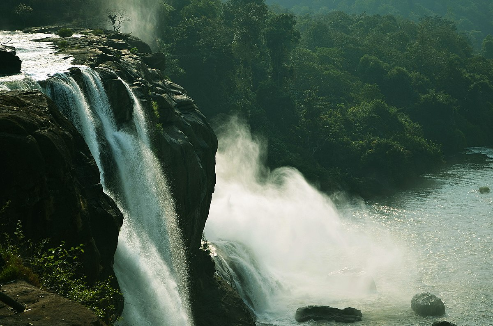

Places to Visit

Athirappilly Waterfalls

Vadakkumnathan Temple
Thrissur (About this soundpronunciation (help·info)), also known by its former name Trichur, is a city and the headquarters of the Thrissur district in Kerala, India. It is the third largest urban agglomeration in Kerala after Kochi and Calicut urban areas and the 21st largest in India. It is famous for the Thrissur Pooram festival. To the north, Thiruvambady Temple is home to several elephants. Sakthan Thampuran Palace houses an archaeology museum with bronze statues and ancient coins. The city is built around a 65-acre (26 ha) hillock called the Thekkinkadu Maidanam which seats the Vadakkumnathan temple. It is located 304 kilometres (189 mi) towards north-west of the state capital city Trivandrum. Thrissur was once the capital of the Kingdom of Cochin. Thrissur is known as "cultural capital of Kerala" because of its cultural, spiritual and religious leanings throughout history.[5] One of its main cultural events is the Thrissur Pooram, which attracts quite a number of tourists and travellers.
Athirappilly Waterfalls
Vadakkumnathan Temple